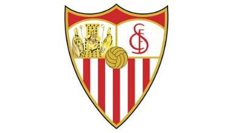
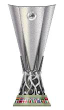
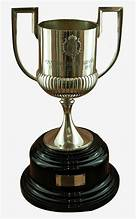
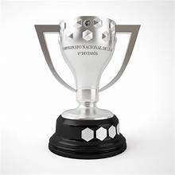

Bienvenido a mi web sobre uno de los equipos más históricos de España.
El Sevilla es un club de fútbol fundado en 1890 y, a lo largo de su historia, ha logrado importantes títulos. Su trayectoria europea destaca por sus victorias en la UEFA Europa League.
En esta web se recogen los principales trofeos del equipo, para conocer la historia de uno de los clubes más históricos de España e incluso del mundo.
Así es el escudo del club:




Ser del Sevilla es sentir cada partido como si fuera una final.
Siete Europa League no se consiguen por casualidad!
Opinión de David Buzón, aficionado del Sevilla FC.
Datos básicos del Sevilla FC:
Nombre oficial : Sevilla Fútbol Club Fundación : 1890 Estadio : Ramón Sánchez-Pizjuán Colores : blanco y rojo Web oficial : sevillafc.es
Puedes consultar el palmarés y las noticias del equipo en la web oficial del Sevilla FC.
También puedes mirar el proyecto XML en el archivo datos.xml, donde cada trofeo se escribe entre las etiquetas <trofeo> y </trofeo>.
Pasión & historia: eso es el Sevilla.
© 2026 David Buzón
Proyecto de Lenguajes de Marcas, 1.º DAM.